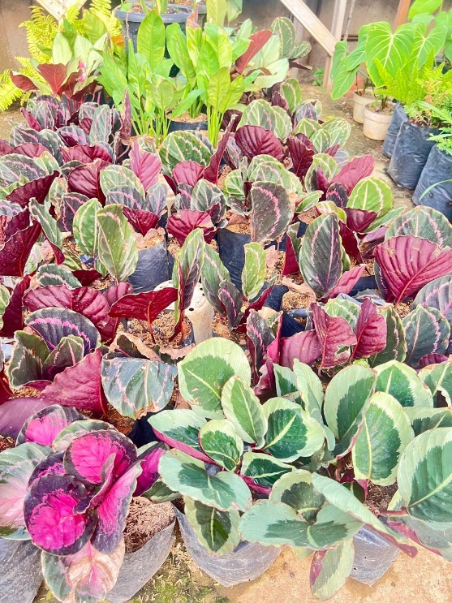
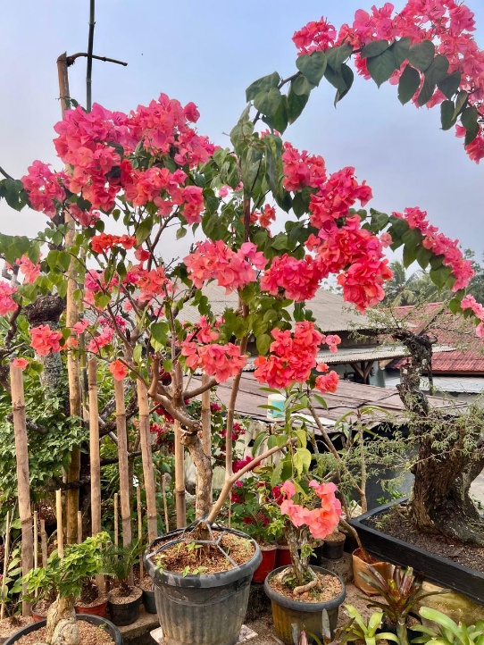

Tanaman hias menjadi salah satu pilihan yang banyak digunakan untuk membuat rumah dan lingkungan sekitar terlihat lebih menarik. Selain memberikan kesan lebih asri, keberadaan tanaman juga dapat membuat suasana terasa lebih nyaman dan menyegarkan. Berbagai bentuk, ukuran, serta tampilan tanaman hias membuat tanaman ini dapat ditempatkan di berbagai area, seperti halaman, teras, maupun bagian rumah lainnya. Namun, banyaknya pilihan tanaman hias terkadang membuat seseorang bingung dalam menentukan tanaman yang sesuai dengan kebutuhan, kondisi tempat, dan kemampuan dalam merawatnya. Oleh karena itu, pemilihan tanaman hias perlu disesuaikan agar tanaman yang dipilih dapat memberikan manfaat sekaligus memperindah lingkungan rumah.

Apa yang Perlu Dipertimbangkan Saat Memilih Tanaman Hias?
Sebelum membeli tanaman hias, hal pertama yang wajib diperhatikan adalah kondisi mikroklimat tempat yang akan digunakan. Setiap varietas tanaman memiliki preferensi dan kebutuhan fisiologis yang berbeda terhadap intensitas sinar matahari, ketersediaan air, tingkat kelembapan udara, dan suhu ruangan.
Tanaman yang akan diletakkan di halaman luar (outdoor) tentu membutuhkan toleransi tinggi terhadap terik panas dan hembusan angin, sedangkan tanaman yang ditempatkan di teras semi-terbuka atau ruang tamu (indoor) memerlukan jenis yang toleran terhadap naungan atau cahaya tak langsung (indirect light).
Selain faktor iklim tempat, ukuran dan laju pertumbuhan tanaman juga memegang peranan krusial. Pemilihan ukuran yang tepat dan proporsional akan menghasilkan harmoni visual dengan furnitur dan luas ruangan di sekitarnya tanpa membuat area terlihat sempit atau sesak.

Mengapa Memilih Tanaman Hias Sesuai Kebutuhan?
Memilih tanaman berdasarkan kebutuhan dan kesesuaian ruang membuat proses pemeliharaan harian menjadi jauh lebih mudah, efisien, dan menyenangkan. Tanaman yang ditempatkan pada habitat yang sesuai dengan karakter alaminya akan tumbuh dengan daya tahan tinggi, tidak mudah terserang penyakit, dan jarang mengalami daun menguning atau layu.
Sebaliknya, membeli tanaman murni karena impuls visual tanpa memahami kebutuhannya kerap kali berujung pada kekecewaan ketika tanaman layu dalam hitungan minggu. Penyesuaian tujuan—apakah sebagai peneduh teras, aksen dekorasi meja kerja, penyaring udara ruangan, atau penambah semarak warna halaman—adalah kunci keberhasilan hobi berkebun Anda.
Bintang Jaya Farm sebagai Pilihan Tanaman Hias
Bintang Jaya Farm hadir menyediakan berbagai ragam koleksi tanaman hias berkualitas yang siap mempercantik hunian Anda. Koleksi kami tidak hanya terbatas pada satu atau dua jenis tanaman saja, melainkan mencakup aneka tanaman berdaun eksotis, tanaman penyerap polusi, sukulen, hingga tanaman berbunga warna-warni.
Salah satu tanaman unggulan yang menjadi primadona di nursery Bintang Jaya Farm adalah Bougenville. Tanaman ini memiliki kelopak bunga dengan variasi rona warna yang sangat memukau, sehingga sangat tepat dijadikan elemen utama untuk menyemarakkan pekarangan, pagar hidup, maupun taman depan rumah.

Selain Bougenville, Bintang Jaya Farm terus mengurasi tanaman-tanaman populer seperti Monstera, Aglaonema, Sansevieria, Calathea, hingga tanaman gantung sirih hias. Dengan ketersediaan opsi yang melimpah, calon pembeli bebas menentukan pilihan yang selaras dengan tema interior maupun anggaran yang telah disiapkan.


Kapan Waktu yang Tepat untuk Mulai Memiliki Tanaman Hias?
Tidak ada batasan waktu khusus atau musim tertentu untuk memulai langkah menghijaukan hunian Anda. Selama Anda telah menentukan sudut lokasi yang tepat dan memiliki komitmen untuk meluangkan sedikit waktu melakukan penyiraman berkala, siapa pun bisa mulai mengadopsi tanaman hias hari ini.
Menghadirkan sentuhan vegetasi alami di rumah terbukti secara psikologis mampu meredakan stres kerja harian, meningkatkan kualitas udara, dan memberikan nuansa ketenangan yang positif bagi seluruh anggota keluarga.
Bagaimana Cara Menentukan Pilihan yang Sesuai?
Agar tidak salah pilih saat berbelanja tanaman hias, Bintang Jaya Farm merekomendasikan 5 tahapan langkah praktis berikut:
- Tentukan Lokasi Penempatan Tanaman Petakan terlebih dahulu area mana yang ingin dihias: apakah pekarangan terkena sinar langsung, teras semi-terbuka yang teduh, atau ruang kerja ber-AC di dalam rumah.
- Perhatikan Kondisi Lingkungan Sekitar Amati durasi paparan sinar matahari, sirkulasi angin, serta suhu rata-rata pada titik penempatan tersebut sebelum menentukan spesies tanaman.
- Sesuaikan Ukuran Tanaman Secara Proporsional Pilih tanaman berdimensi kompak untuk rak atau meja, serta gunakan tanaman berdaun tegak atau bertajuk rimbun untuk sudut ruangan luas agar terlihat seimbang.
- Pertimbangkan Kemampuan dan Waktu Perawatan Rutin Bagi Anda yang memiliki kesibukan padat, pilihlah varietas tangguh (low-maintenance) seperti Sansevieria atau Bougenville yang tidak menuntut penyiraman setiap hari.
- Pilih Tanaman Berdasarkan Tampilan yang Disukai Sesuaikan corak daun, siluet tanaman, dan warna bunga dengan gaya visual hunian Anda—baik minimalis, tropis, klasik, maupun modern industrial.
Tanaman Hias untuk Rumah yang Lebih Menarik
Memilih tanaman hias bukan sekadar membeli keindahan sesaat, melainkan seni menyelaraskan alam dengan ruang tinggal. Dengan pertimbangan yang matang, tanaman hias akan tumbuh menjadi aset hidup yang meningkatkan kualitas hidup penghuninya sekaligus menaikkan nilai estetika properti Anda.
Bintang Jaya Farm berkomitmen menjadi mitra terpercaya bagi pemula maupun kolektor berpengalaman. Kami tidak hanya menyediakan tanaman yang sehat dan siap tumbuh, tetapi juga mendampingi Anda dengan saran penataan dan edukasi perawatan pasca-pembelian.
Butuh Saran Pemilihan Tanaman yang Pas untuk Rumah Anda?
Konsultasikan foto ruangan atau halaman rumah Anda bersama tim Bintang Jaya Farm secara gratis. Kami siap merekomendasikan tanaman terbaik sesuai selera dan budget Anda!
Konsultasi Gratis via WhatsAppDaftar Referensi & Sumber:
1. Nasrullah, N., dkk. (2021). Informasi Teknis Tanaman Hias Berbunga Indah. Direktorat Buah dan Florikultura, Ditjen Hortikultura, Kementerian Pertanian Republik Indonesia.
https://pustaka.bppsdmp.pertanian.go.id/.../koleksi-buku-pilihan-informasi-teknis-tanaman-hias-berbunga-indah
2. Basuki, N., dkk. (2021). Informasi Teknis Tanaman Hias Berdaun Indah. Direktorat Buah dan Florikultura, Kementerian Pertanian Republik Indonesia.
https://pustaka.bppsdmp.pertanian.go.id/.../koleksi-buku-pilihan-informasi-teknis-tanaman-hias-berdaun-indah
3. Balai Besar Pelatihan Pertanian Lembang. Pemeliharaan Tanaman Hias Pot. Kementerian Pertanian Republik Indonesia.
https://bbpplembang.bppsdmp.pertanian.go.id/publikasi-detail/1123